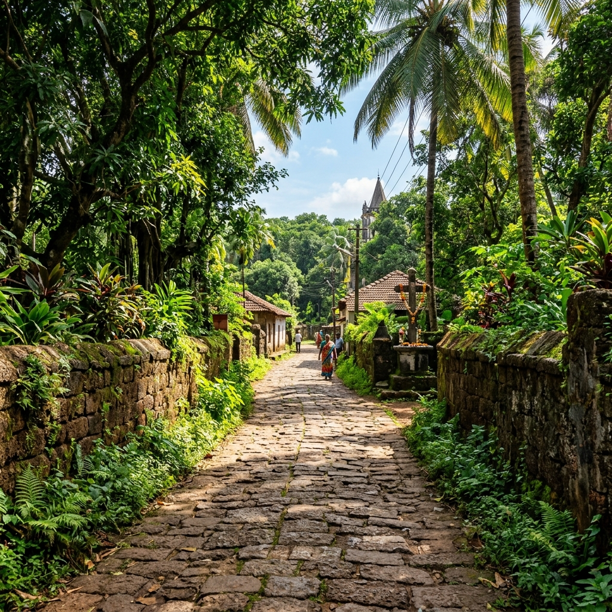
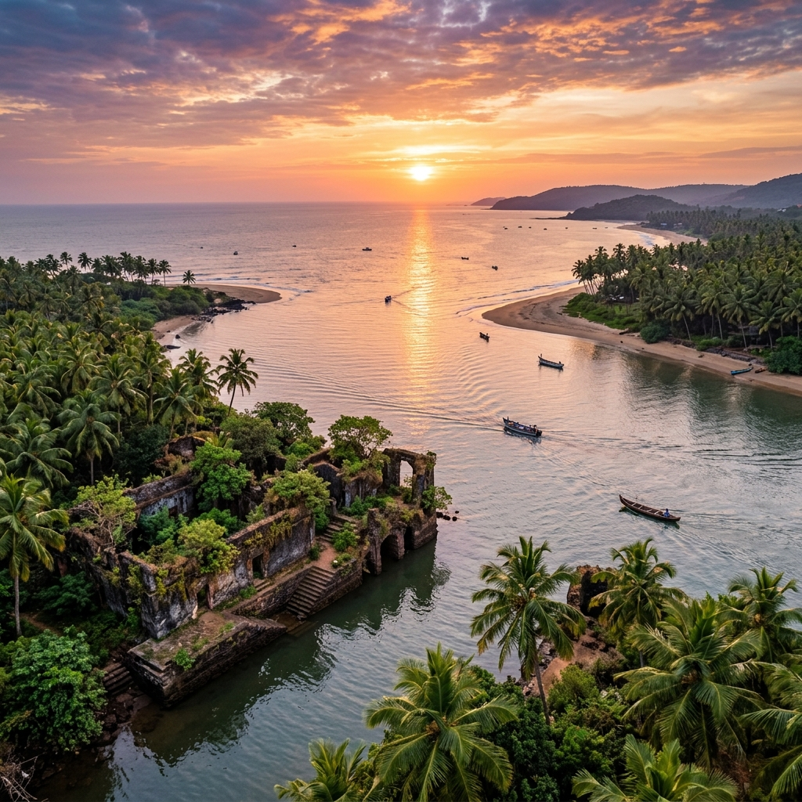
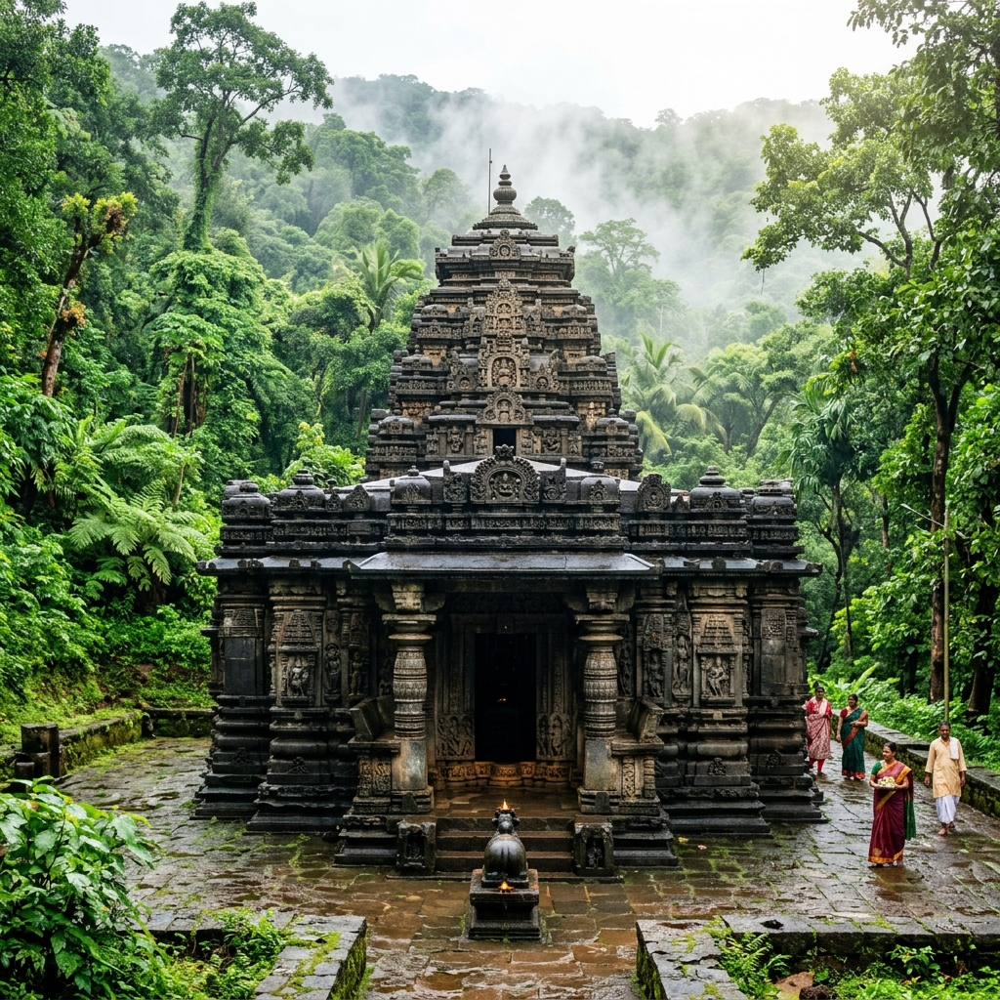

Gopakapattana Ancient Port Explorer
Step onto the banks of the Zuari River in Goa Velha. Discover Gopakapattana, the fortified maritime capital of the Kadambas, famed for its global spice trade, Arabian horse imports, and the grand stone-paved Rajvithi royal road.
The Fortified Seaport Capital of Goa
Gopakapattana (known in Sanskrit records as Gopakapuri or Govapuri) was the capital and premier seaport of the Kadamba dynasty of Goa between the 10th and 14th centuries. Located along the Zuari River near modern-day Goa Velha, the capital was established by King Jayakesi I, who moved the seat of power from the inland city of Chandrapur (Chandor) to create a formidable coastal navy and trade center.
The city was highly fortified and boasted a large international population, including Arab, Persian, Sri Lankan, and Gujarati merchants. Gopakapattana served as the administrative core and primary treasury of the Kadambas, rising to become one of the wealthiest mercantile hubs on India's western coast before Portuguese rule.
📜 Kingdom Profile
- Location: Zuari River Estuary, Goa Velha.
- Royal Shift: Capital established by King Jayakesi I in 1050 CE.
- Decline: River siltation in the 15th century shifted shipping north to Old Goa (Ela).
Spices, Silks, and Arabian Warhorses
Gopakapattana was a vital node in the trans-oceanic trade network, linking East Asia and India with the Persian Gulf.
Arabian Horse Imports
Gopakapattana was the leading import hub for Arabian warhorses, shipped from Ormuz and Aden to supply the armies of the Deccan Sultanates and Vijayanagar Empire.
Spice & Betel Exports
Local fleets exported Goan betel nuts, coconuts, incense, and Malabar black pepper, exchanging them for silks, saffron, and gold bullion.
Maritime Navy
Under Jayakesi I, the Kadambas built a powerful merchant and military navy that patrolled the Konkan coast and escorted merchant dhows.
🧱 Key Archaeological Relics
- The Rajvithi: A wide, stone-paved royal highway connecting the harbor to the palace.
- Submerged Docks: Granite docking blocks and stone bunds visible along the Zuari River at low tide.
- Tambdi Surla Temple: Basalt rock architecture representing the height of Kadamba art style.
The Royal Road and Docking Bastions
Archaeological surveys in Goa Velha have uncovered extensive remnants of Gopakapattana's golden age. The most famous relic is the **Rajvithi** (Royal Road), a massive, stone-paved highway built by Kadamba engineers to transport cargo and troops between the harbor docks and the city center.
Along the river banks, stone-lined embankments, steps, and granite mooring blocks remain, pointing to a highly sophisticated tidal dockyard. Siltation eventually blocked the river channels, forcing shipping to relocate north to the Mandovi River, leaving Gopakapattana's docks preserved beneath the river mud.
Chronology of Gopakapattana
Follow the historical timeline of Goa's ancient port capital.
Kadamba Capital Inception
King Jayakesi I shifts the capital from Chandrapur to Gopakapattana, creating a new seaport capital.
Imperial Trade Treaty
Kadambas establish shipping safety treaties, exchanging merchant embassies with Sri Lanka and Gujarat.
Delhi Sultanate Invasion
Malik Kafur's forces capture and sack Gopakapattana, damaging the harbor walls and palaces.
Siltation and Shift North
Bahmani forces capture the region. Siltation of the Zuari River shifts port focus north to Old Goa (Ela).
Relics of the Kadamba Dynasty
Explore the stone-paved highways and architectural remnants of Govapuri.



📚 References & Further Reading
- Mitragotri, Dr. V. R. (1999). A History of Kadambas of Goa: Inscriptions and Monuments. Goan History Association.
- Gune, Dr. V. T. (1979). Gazetteer of the Union Territory of Goa, Daman and Diu. Government Press.
- Archaeological Survey of India (N.D.). Excavations at Goa Velha and Gopakapattana Docks.
- Sastri, K. A. Nilakanta (1955). A History of South India. Oxford University Press.